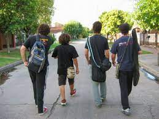
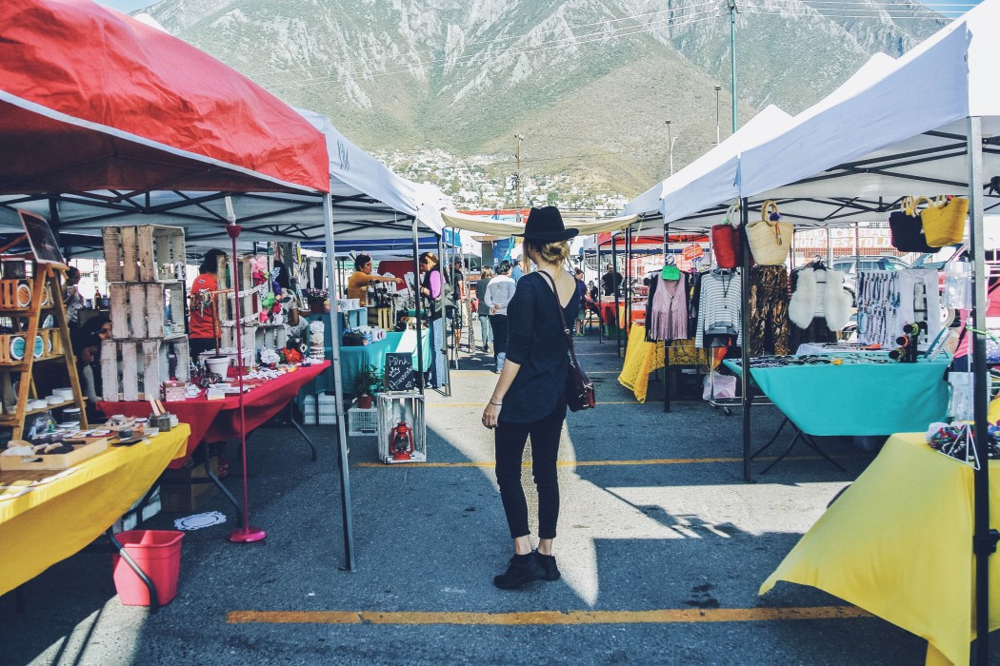
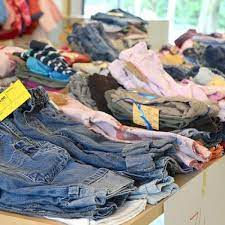
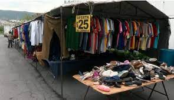
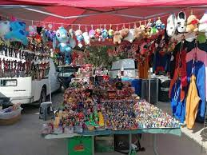
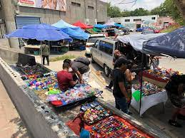
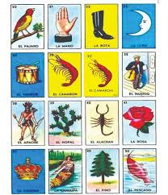
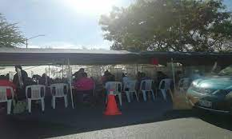
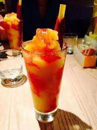
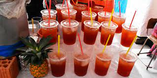

Hablando de pasatiempo una de mis cosas favoritas por hacer seria salir con mis amigos a el mercado que se pone a 6 cuadras de por mi casa.
 Lo mejor de ir a un mercado es que hay miles de cosas que te pueden llamar la atencion, como lo puede ser cualquier ropa que gustes. Ademas puedes comprar mas mercancia ya que en un mercado es mas barato todo.
 Cuando era niño tambien me gustaba ir al mercado porque mis papas me compraban juguetes que a mi me me gustaban, hoy en dia ya no es asi.
 Otra de las anecdotas que recuerdo es que antes acompañaba a mi abuela a jugar loteria al mercado y cuando ganaba siempre me daba del dinero que ganaba.
 Es por ello que acudir al mercado es uno de mis pasatiempos favoritos, tambien porque cuando hace calor compro un delicioso smoothie o una bebida como un tepache.
 